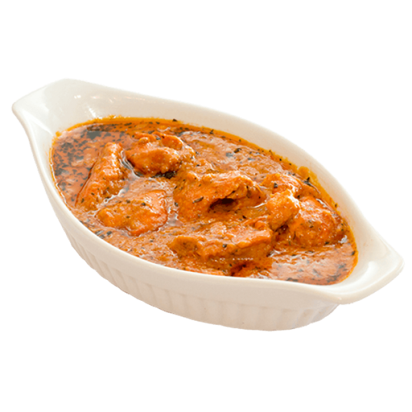
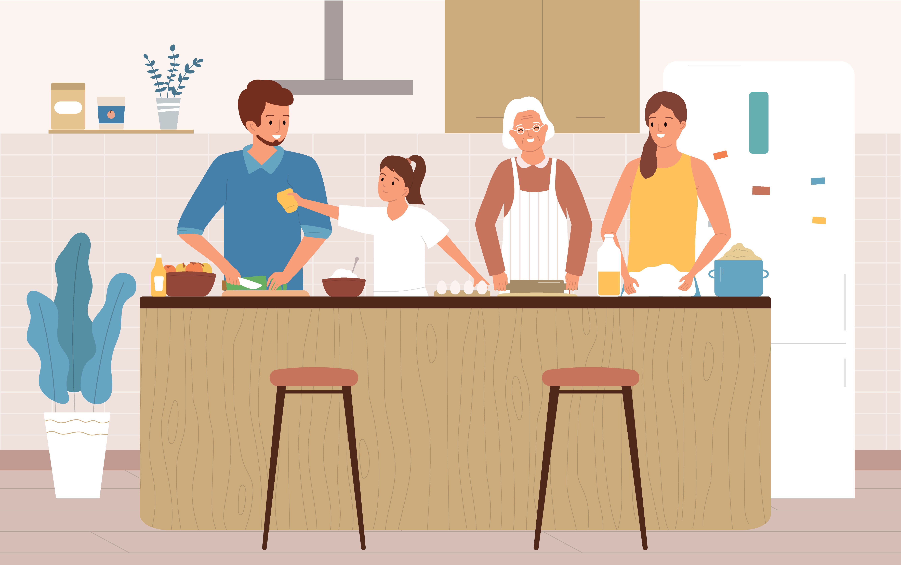
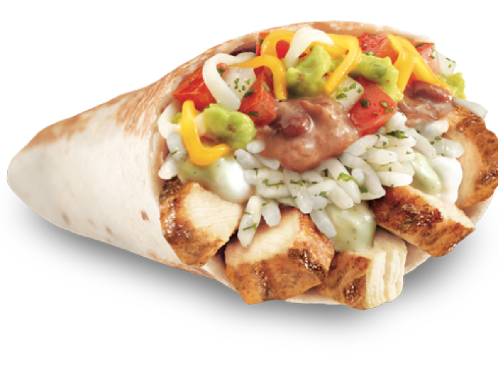

Cozy · 30 mins
30‑Minute Chicken Tikka Masala
All the rich, spiced tomato flavor of a slow‑simmered curry, smartly hacked for a hectic weeknight without sacrificing the warmth.

A calm, easy-to-scan collection of fast recipes designed for hectic weeknights. Discover dishes that read like a short story, guiding you effortlessly from pantry to plate.

Cozy · 30 mins
All the rich, spiced tomato flavor of a slow‑simmered curry, smartly hacked for a hectic weeknight without sacrificing the warmth.

Oven · 15 mins
When yeast and dough proofing simply aren't an option, a crisp flatbread base delivers all the cheesy, bubbly satisfaction.

Taco Tuesday · 15 mins
A frantic Taco Tuesday's best friend. Using smart shortcuts, you can build vibrant, fresh tacos faster than a drive‑thru run.